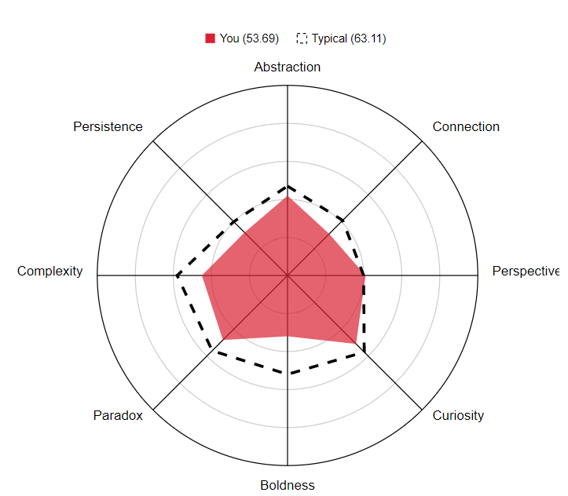

I am a Vietnamese who is currently a first year IT student of RMIT University which is an International University. I choose IT mainly because I am bad at speaking with more than three people, not an anti-social just socially awkward. I am very bad at opening a conversation and during conversations i've heard from people that it usually seems like i try to avoid people but in fact i am not. With this personality i also picked up some hobby that's pretty suited for a shut-in like me, which is building model kits and collecting things that i like along side with items that related to computers just because i'm curious about how certain thing work. Although I can speak Vietnamese and English fairly decent but I am also self studying Japanese due to the fact that I wanted to communicate better with some of my friends.
Interested in IT
To be honest I am only moderately interested in IT compare to most of the other subjects that I found.
There are way too many things in IT that is interesting, I'm not so sure abou what is my actual interest in it because there are quite a lot of option to pick from. Also I'm just highly curious about how certain things work, how can I change it to my preference and I genuinely like to do "reverse engineering" from time to time to see how is a certain program or hardware functioning.
I was eligible to become a student of an engineering school but due to ease of transportation and location RMIT is the only left for my parent to pick out for me?
I expect many things in studying in this field in the past but over the year I've learnt to lower my expectation so I could look at a certain thing in this subject in more details and how I can approach deeper in the IT field.
Ideal jobs
Why I picked these jobs
I wanted to pick these job because with my at least 3 years of experience as a part-time product and software tester and game tester in the past, I think I could get the hang of the environment pretty easily and be able to adapt to what I will have to cope with in the future. People may find that I rarely communicate verbally with people or when I do, I couldn't do it very well so that I couldn't do any testing and reporting work with other people very well. However I managed to do so surprisingly well through out my time doing testing on different projects and I was able to find errors that some people who has been working there for quite sometime wasn't even expected or noticed.
Personal Profile
After taking the test, I've realized that my learning style and personality is very similar to each other like being auditory learner and an visual learner, meaning that I learn by hearing and listening, perceiving and remembering things you have heard and seen. It's also true that I usually store information by the way that it was expressed verbally and how it was demonstrated. I usually get a better time understanding spoken or visualized instructions than written ones, I frequently learn by listen to it, speak it out loud or even imagining how something was instructed in order to remember it again. And it is very close to who I am, as an auditory learner and a visual learner, I most likely hum or discuss with myself or even imagine out something and hold it in my hands and examine it if I get bored. Some might think that I'm not listening, even though I maybe hearing and understanding the same thing that was being said.
My personality
Im not very surprised since I knew who I am and it is true that myself as an "Mediators" listen to many people, however discuss with Few unlike the extraverted although, It's true that I can focus on just a number of individuals and if everything spreads too thinly, I can run out of energy, and even become down in the mouth and swamped by all the bad within the world that I can't interfere. If not careful, us Mediators can lose ourselves in the quest for good and neglect the day-to-day upkeep that life demands. Mediators often drift into deep thought and sometimes begin to lose touch, withdrawing into “hermit mode”, and it will take a good deal of energy from our friends or partner to snap back into the real world. I've heard that Mediators’ ability with language doesn’t stop with their native tongue, either – like the majority who share the Diplomat personality types, they're considered talented when it involves learning a second or even third language. The strength of their visionary communication style lends itself well to artistic works, and it comes as no surprise that a lot of well-known Mediators are poets, writers and actors. With these qualities, allowing Mediators to speak deeply with others, simply speaking in metaphors and parables, and understanding and making symbols to share their concepts and ideas.

From what I can tell that apparently I am fairly average or below average even in term of creativity and well atleast my creativity is limited to safe options since I'm not very bold and I have higher perspective compare to others metrics. Although it is said that I can get concepts from ideas much better than most of my other skills but I'm not very confident in that and as you can see that from this chart, I am fairly curious and I could change or improve something that people tend to accept as the norm. It is also said that I can carry large quantities of information and be able to manipulate and manage the relationships between them. And it is true that I can not really force myself to keep trying to derive more and stronger solutions even when good ones have already been generated but usually despite knowing that I would still keep on trying until I ran out of ideas to try out.
Project Idea
I wanted to make a tool that could help increase productivity for some people especially people who have to work with the world wide web environment a lot. And the sites that they have to go through could be filled with malicious links or websites and could also denied access to your machine through malicious malware like scripts or even viruses. So I figure that in order to help out people who doesn't have much knowledge about the webs stay safe and coat their private information with at least a layer of protection since having some protection are always better than having little to no protection against the world of data.
I had in mind this project for a few months that I'm not sure how should I do it. However, I know that it will involves making a small computer device that could increase productivity for everyone. Picture when people enter a site for a certain reason and that site been shorted and placed you in a queue timer sometimes it is fake queue timer as well. While making you wait for a number of seconds or minutes, a lot of ads played at the time as well and some of them could fake out your access link and lead you to a malicious website so I wanted to make something that could blocks something like that a lead you straight to were you wanted to be on the web. And certainly it has happened to a lot of people already including me and I got my machine gone up in smoke in the past because of how insecure I was and I lacking I was in term of online security.
Like I have mentioned, I wanted to build a small device that could do a lot of the things for the average internet users to increase their productivity in the World wide web, what it generally does is that it detects the sort of site that the user's device connected to is either protected or not and will be able to warn the user about the web site or straight up block the site, if this certain site has been compromised, reported as a malicious website or black listed. Along side with some kind of script that will help people out with some but not all captcha questions and or eliminate the wait time between the start of the timer and when the skip button shows up in the shortened for the user and lead people to their desired address that they wanted to be. It also can do what an usual ad block feature could do like detect any kind commonly used or html script that is registered as an ad in the world, to be able to block it or even prevent it from showing up in the user's display at all, this device utilize something like a remove or a replacing tool which is very similar to what your browser can do already, the design of this device is aimed to block anything that could be a threat from any kind of sources and platform like a phone, a tablet or even a smart TV and it doesn't have to be restricted to only within a browser. Using a DNS based tool that will tries to seek out trackers and address from website and or other sources for something like an ad or a malware banner that is store within some kind of server or website. To eliminate most of the risk that is surrounding the World wide web environment. To keep the user safe from their own access to these kind of site, what It will tries to do is matching a pattern with data provided by the DNS provider and with the help of a provider such as cloud flare this device could potentially be a new way for people to consistently block unwanted trackers, malicious websites or even malware from anywhere given that the device that it's user have is a device with a Universal Serial Bus (USB) jack. Essentially, this device act as a guard between the user's device and their service provider in order to check whether the server address is in the black list or not so it could stop the request from services provider or server and send back to the device a blank IP address so there are no connection between the ad or malicious site and the user's device and will either be a blank access or as an error most of the time and the benefit of this device is that once configured, it can block notorious tracking services, unwanted sites or even preventing malware or malicious sites from talking to their controllers' servers.
The software that will be used is called something like a "pi-hole", stated by the developers that pi-hole is a highly compatible, light weight that could run on almost any Linux systems, or even virtual machine environments. It is highly robust which allow for an ease of configurations and even able to content block in non-browser locations, such as mobile apps and smart TVs. It is versatile so that it can optionally function as a DHCP server, ensuring all your devices are protected automatically and it is also scalable meaning that it is capable of handling hundreds of millions of queries when installed on server-grade hardware. And the bonus thing about it is that this is a free open-sourced software, other things that is required for this software to operate is a micro computer like a raspberry-pi, a storage space and something to communicate with the given servers so there will be at least a micro SD card for the system and a micro b to ethernet dongle unless the raspberry-pi already have wi-fi built into it. And of course, something to hold the pi in and something to install an OS to the micro SD card, internet connection and a micro USB power supply.
Since this device is a DNS based and pretty open-sourced. There for the sets of skills that is required for this project is some basic knowledge of HTML, networking and some java scripts. Due to working with some connection based device it is essential that people who will be working on this knows a bit about how servers works, how IP is transferred and also how can the server from the source communicate with the DNS server. Furthermore, for captcha solving that would need you to have a script hook that can detect the captcha that is showing on the screen for some accurate captcha solving solutions. And the most important skill of all when we have to work as a team for a complete project is teamwork and co-operation.
If this product is going to be completed and functional, it's goal to help it's user improve their daily lives, especially on the productivity of the World wide web side. The device's purpose is to stop bits and bits of ads that could distract the user from doing their jobs, preventing some malicious action from attackers on the webs and genuinely tries to help their user waste less time on waiting and more time on doing what they wanted to do. With the ad blocking feature, it can be a hassle to setup since there won't be any automatic black-listing system yet but hopefully the preset is enough for the majority of people out there. Furthermore, the captcha solving scripts is going to be a bit of a problem since there are too many style of captcha, there are too many ways that a captcha could be presented. It is expected to be able to help the user with some super common captcha that is presented all around the web.